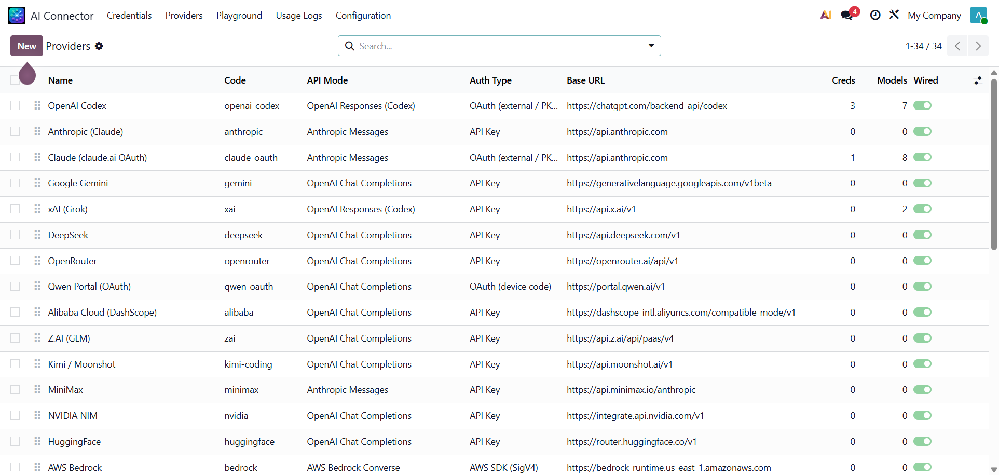
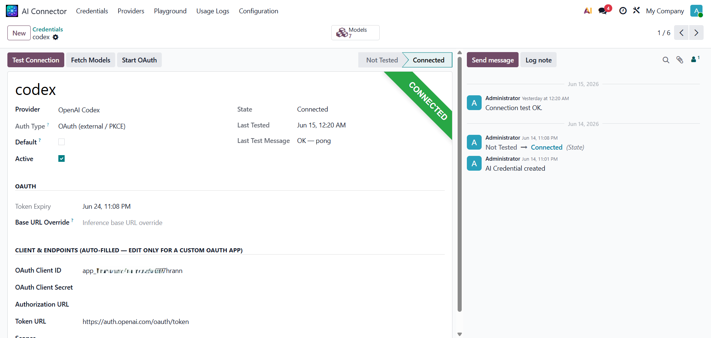
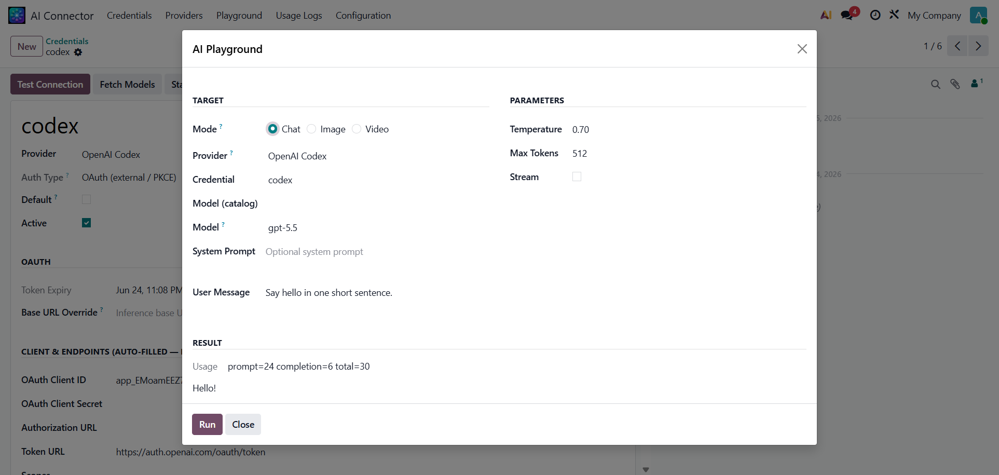
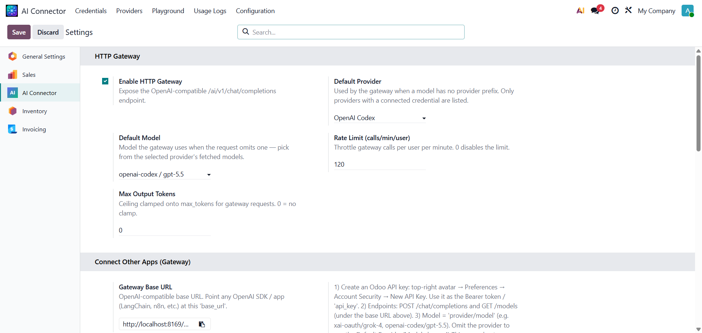
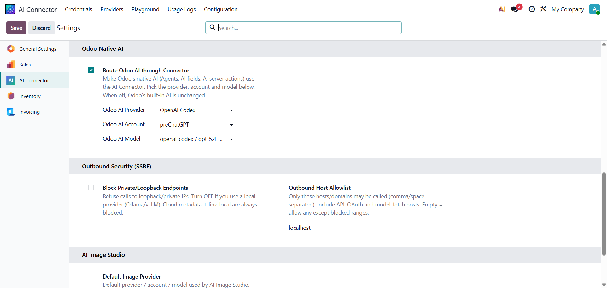
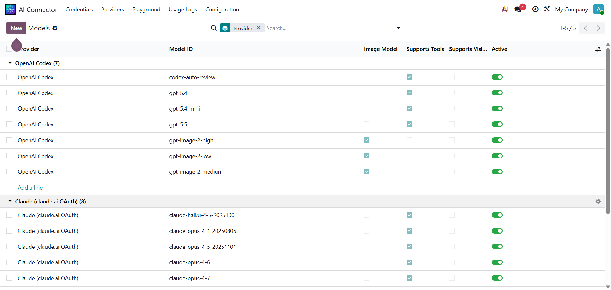
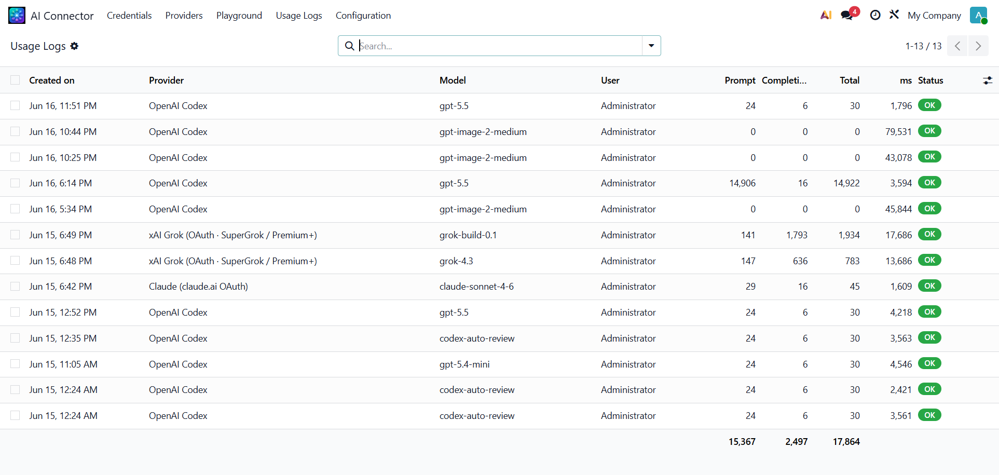

<div id="module-description">
<div style="font-family:'Inter','Segoe UI',Roboto,Helvetica,Arial,sans-serif;color:#1f2533;line-height:1.6;max-width:1160px;margin:0 auto;font-size:15px">

<!-- HEADER (cover banner is shown by the store above this) -->
<div style="text-align:center;padding:8px 12px 0">
  <div style="text-transform:uppercase;letter-spacing:3px;font-size:12.5px;font-weight:700;color:#b45309">Use Existing Subscription &nbsp;/&nbsp; No API &nbsp;/&nbsp; Multi-Provider</div>
  <h1 style="font-size:38px;font-weight:800;letter-spacing:-.5px;margin:8px 0 0;color:#0f172a">AI Connector for Odoo</h1>
  <p style="font-size:18px;margin:14px auto 0;max-width:780px;color:#475067">Connect Odoo to <strong>ChatGPT, Claude, Grok, Gemini</strong> and <strong>30+ AI / LLM providers</strong> &mdash; using the <em>subscription you already pay for</em> instead of per-token API fees. Call any model from one Python method or an OpenAI-compatible HTTP gateway.</p>
  <div style="margin-top:22px">
    <span style="display:inline-block;border:1px solid #f0b429;background-color:#fffbeb;color:#92400e;padding:9px 16px;border-radius:999px;font-size:14px;font-weight:700;margin:5px">Use your existing subscription &mdash; no per-token API fees</span>
    <span style="display:inline-block;border:1px solid #0ea5a4;background-color:#ecfeff;color:#0e7490;padding:9px 16px;border-radius:999px;font-size:14px;font-weight:700;margin:5px">Chat from Odoo's native AI &mdash; no MCP server to expose</span>
    <span style="display:inline-block;border:1px solid #10b981;background-color:#ecfdf5;color:#065f46;padding:9px 16px;border-radius:999px;font-size:14px;font-weight:700;margin:5px">AI Connector Bridge included FREE</span>
  </div>
  <div style="margin-top:12px">
    <span style="display:inline-block;border:1px solid #dbe2ea;background-color:#f8fafc;color:#334155;padding:6px 13px;border-radius:999px;font-size:12.5px;font-weight:600;margin:3px">30+ Providers</span>
    <span style="display:inline-block;border:1px solid #dbe2ea;background-color:#f8fafc;color:#334155;padding:6px 13px;border-radius:999px;font-size:12.5px;font-weight:600;margin:3px">5 Wire Protocols</span>
    <span style="display:inline-block;border:1px solid #dbe2ea;background-color:#f8fafc;color:#334155;padding:6px 13px;border-radius:999px;font-size:12.5px;font-weight:600;margin:3px">OpenAI-Compatible Gateway</span>
    <span style="display:inline-block;border:1px solid #dbe2ea;background-color:#f8fafc;color:#334155;padding:6px 13px;border-radius:999px;font-size:12.5px;font-weight:600;margin:3px">Streaming &middot; Vision &middot; Tools</span>
    <span style="display:inline-block;border:1px solid #dbe2ea;background-color:#f8fafc;color:#334155;padding:6px 13px;border-radius:999px;font-size:12.5px;font-weight:600;margin:3px">API Key &middot; OAuth &middot; AWS</span>
    <span style="display:inline-block;border:1px solid #dbe2ea;background-color:#f8fafc;color:#334155;padding:6px 13px;border-radius:999px;font-size:12.5px;font-weight:600;margin:3px">No MCP Server Needed</span>
  </div>
</div>

<!-- INTRO -->
<div style="margin-top:44px;text-align:center">
  <div style="text-transform:uppercase;letter-spacing:2px;font-size:12px;font-weight:700;color:#3b5bdb">One connector, every model</div>
  <h2 style="font-size:29px;font-weight:800;margin:8px 0 0;color:#0f172a">Stop hard-wiring a single vendor into Odoo</h2>
  <p style="max-width:840px;margin:14px auto 0;color:#475067;font-size:16px">AI Connector gives you a declarative catalog of AI providers, secure per-account credentials, and one chat method that normalises requests and responses across OpenAI-compatible, Anthropic, AWS Bedrock and OpenAI Responses (Codex) backends. Configure once &mdash; then call OpenAI, Claude, Gemini, Grok, DeepSeek, OpenRouter, Bedrock and more with the same code.</p>
</div>

<!-- SAVINGS BAND (light amber, dark text) -->
<div style="margin-top:44px;background-color:#fffbeb;border:1px solid #f3d486;border-radius:18px;padding:38px 28px;text-align:center">
  <div style="text-transform:uppercase;letter-spacing:2px;font-size:12px;font-weight:700;color:#b45309">The feature no other connector gives you</div>
  <h2 style="font-size:29px;font-weight:800;color:#7c4a02;margin:8px 0 0">Use the AI subscriptions you <em style="color:#b45309">already pay for</em></h2>
  <p style="max-width:840px;margin:14px auto 0;color:#7a5616;font-size:16px">Already on <strong>ChatGPT Plus/Pro</strong>, <strong>Claude Pro/Max</strong>, <strong>SuperGrok</strong>, <strong>Gemini</strong> or <strong>Qwen</strong>? Sign in once with secure OAuth and call those models straight from Odoo &mdash; billed to your <strong>flat monthly plan</strong>, not metered per-million-token API pricing. For heavy or scaling usage this can cut your AI spend by <strong>hundreds or thousands of dollars a month.</strong></p>
  <table style="width:100%;border-collapse:separate;border-spacing:11px;margin-top:24px;text-align:left"><tr>
    <td style="width:50%;vertical-align:top">
      <div style="border:1px solid #f3cccc;background-color:#ffffff;border-radius:14px;padding:24px">
        <div style="font-size:12.5px;font-weight:800;text-transform:uppercase;letter-spacing:1px;color:#dc2626">Typical connectors &mdash; pay-per-token API keys</div>
        <div style="font-size:19px;font-weight:800;color:#16203a;margin-top:8px">Your bill grows with every request</div>
        <div style="margin-top:12px;color:#46506a;font-size:14.5px"><span style="color:#dc2626;font-weight:800">&times;</span>&nbsp; Charged per million input + output tokens</div>
        <div style="margin-top:8px;color:#46506a;font-size:14.5px"><span style="color:#dc2626;font-weight:800">&times;</span>&nbsp; Costs spike with long prompts, RAG &amp; tool loops</div>
        <div style="margin-top:8px;color:#46506a;font-size:14.5px"><span style="color:#dc2626;font-weight:800">&times;</span>&nbsp; Hard to predict &mdash; a busy month is a scary invoice</div>
        <div style="margin-top:8px;color:#46506a;font-size:14.5px"><span style="color:#dc2626;font-weight:800">&times;</span>&nbsp; You pay again even though you own a subscription</div>
      </div>
    </td>
    <td style="width:50%;vertical-align:top">
      <div style="border:2px solid #f59e0b;background-color:#ffffff;border-radius:14px;padding:24px">
        <div style="font-size:12.5px;font-weight:800;text-transform:uppercase;letter-spacing:1px;color:#b45309">AI Connector &mdash; your existing subscription</div>
        <div style="font-size:19px;font-weight:800;color:#16203a;margin-top:8px">A flat monthly price you already pay</div>
        <div style="margin-top:12px;color:#46506a;font-size:14.5px"><span style="color:#16a34a;font-weight:800">&#10003;</span>&nbsp; Sign in with ChatGPT, Claude, Grok, Gemini or Qwen via OAuth</div>
        <div style="margin-top:8px;color:#46506a;font-size:14.5px"><span style="color:#16a34a;font-weight:800">&#10003;</span>&nbsp; Usage runs on your plan &mdash; <strong>no extra per-token cost</strong></div>
        <div style="margin-top:8px;color:#46506a;font-size:14.5px"><span style="color:#16a34a;font-weight:800">&#10003;</span>&nbsp; Predictable, fixed monthly spend</div>
        <div style="margin-top:8px;color:#46506a;font-size:14.5px"><span style="color:#16a34a;font-weight:800">&#10003;</span>&nbsp; Stop paying twice for AI you already have</div>
      </div>
    </td>
  </tr></table>
  <table style="width:100%;border-collapse:separate;border-spacing:11px;margin-top:14px;text-align:left">
    <tr>
      <td style="width:33.33%;vertical-align:top"><div style="background-color:#ffffff;border:1px solid #f0d9a3;border-radius:12px;padding:14px 18px"><b style="display:block;color:#16203a;font-size:14.5px">ChatGPT (Codex)</b><small style="color:#92702c;font-size:12.5px">Plus / Pro / Team via OAuth</small></div></td>
      <td style="width:33.33%;vertical-align:top"><div style="background-color:#ffffff;border:1px solid #f0d9a3;border-radius:12px;padding:14px 18px"><b style="display:block;color:#16203a;font-size:14.5px">Claude</b><small style="color:#92702c;font-size:12.5px">claude.ai Pro / Max via OAuth</small></div></td>
      <td style="width:33.33%;vertical-align:top"><div style="background-color:#ffffff;border:1px solid #f0d9a3;border-radius:12px;padding:14px 18px"><b style="display:block;color:#16203a;font-size:14.5px">xAI Grok</b><small style="color:#92702c;font-size:12.5px">SuperGrok / Premium+ via OAuth</small></div></td>
    </tr>
    <tr>
      <td style="vertical-align:top"><div style="background-color:#ffffff;border:1px solid #f0d9a3;border-radius:12px;padding:14px 18px"><b style="display:block;color:#16203a;font-size:14.5px">Google Gemini</b><small style="color:#92702c;font-size:12.5px">Gemini CLI OAuth login</small></div></td>
      <td style="vertical-align:top"><div style="background-color:#ffffff;border:1px solid #f0d9a3;border-radius:12px;padding:14px 18px"><b style="display:block;color:#16203a;font-size:14.5px">Qwen Portal</b><small style="color:#92702c;font-size:12.5px">Qwen subscription via OAuth</small></div></td>
      <td style="vertical-align:top"><div style="background-color:#ffffff;border:1px solid #f0d9a3;border-radius:12px;padding:14px 18px"><b style="display:block;color:#16203a;font-size:14.5px">MiniMax</b><small style="color:#92702c;font-size:12.5px">OAuth subscription login</small></div></td>
    </tr>
  </table>
  <p style="margin-top:18px;font-size:14px;color:#9a7424">Prefer classic API keys or AWS? They work too &mdash; mix subscription logins and pay-as-you-go keys across providers in the same connector.</p>
</div>

<!-- HIGHLIGHTS (white cards, eyebrow category labels) -->
<table style="width:100%;border-collapse:separate;border-spacing:16px;margin-top:30px">
  <tr>
    <td style="width:33.33%;vertical-align:top">
      <div style="background-color:#ffffff;border:1px solid #e7eaf1;border-radius:14px;padding:24px">
        <div style="font-size:11.5px;font-weight:800;letter-spacing:1.4px;text-transform:uppercase;color:#3b5bdb">Catalog</div>
        <h3 style="font-size:18px;font-weight:700;margin:9px 0 0;color:#16203a">30+ Provider Catalog</h3>
        <p style="margin:8px 0 0;color:#5a647a;font-size:14.5px">A ready-to-use registry of providers &mdash; base URLs, auth type, protocol and per-model quirks already filled in for you.</p>
      </div>
    </td>
    <td style="width:33.33%;vertical-align:top">
      <div style="background-color:#fffdf6;border:1.5px solid #f0b429;border-radius:14px;padding:24px">
        <div style="font-size:11.5px;font-weight:800;letter-spacing:1.4px;text-transform:uppercase;color:#b45309">Save Money</div>
        <h3 style="font-size:18px;font-weight:700;margin:9px 0 0;color:#16203a">Use Your Subscription &mdash; Save Big</h3>
        <p style="margin:8px 0 0;color:#5a647a;font-size:14.5px">Sign in with your ChatGPT, Claude, Grok or Gemini plan via OAuth and pay <strong>no per-token API fees</strong>. Prefer keys? Paste API or AWS credentials too.</p>
      </div>
    </td>
    <td style="width:33.33%;vertical-align:top">
      <div style="background-color:#ffffff;border:1px solid #e7eaf1;border-radius:14px;padding:24px">
        <div style="font-size:11.5px;font-weight:800;letter-spacing:1.4px;text-transform:uppercase;color:#3b5bdb">One-Line API</div>
        <h3 style="font-size:18px;font-weight:700;margin:9px 0 0;color:#16203a">One Python Method</h3>
        <p style="margin:8px 0 0;color:#5a647a;font-size:14.5px"><code>env['ai.connector'].chat(...)</code> returns a normalised result with content, tool calls and token usage &mdash; the same shape for every provider.</p>
      </div>
    </td>
  </tr>
  <tr>
    <td style="vertical-align:top">
      <div style="background-color:#ffffff;border:1px solid #e7eaf1;border-radius:14px;padding:24px">
        <div style="font-size:11.5px;font-weight:800;letter-spacing:1.4px;text-transform:uppercase;color:#3b5bdb">Gateway</div>
        <h3 style="font-size:18px;font-weight:700;margin:9px 0 0;color:#16203a">OpenAI-Compatible Gateway</h3>
        <p style="margin:8px 0 0;color:#5a647a;font-size:14.5px">Point any OpenAI SDK, LangChain, n8n or external app at <code>/ai/v1/chat/completions</code> using a standard Odoo API key.</p>
      </div>
    </td>
    <td style="vertical-align:top">
      <div style="background-color:#ffffff;border:1px solid #e7eaf1;border-radius:14px;padding:24px">
        <div style="font-size:11.5px;font-weight:800;letter-spacing:1.4px;text-transform:uppercase;color:#3b5bdb">No-Code</div>
        <h3 style="font-size:18px;font-weight:700;margin:9px 0 0;color:#16203a">Built-in Playground</h3>
        <p style="margin:8px 0 0;color:#5a647a;font-size:14.5px">Pick a provider, account and model, send a prompt and see the response plus token usage &mdash; no code, right inside Odoo.</p>
      </div>
    </td>
    <td style="vertical-align:top">
      <div style="background-color:#ffffff;border:1px solid #e7eaf1;border-radius:14px;padding:24px">
        <div style="font-size:11.5px;font-weight:800;letter-spacing:1.4px;text-transform:uppercase;color:#3b5bdb">Auditing</div>
        <h3 style="font-size:18px;font-weight:700;margin:9px 0 0;color:#16203a">Usage &amp; Cost Logging</h3>
        <p style="margin:8px 0 0;color:#5a647a;font-size:14.5px">Every call is logged with prompt/completion/total tokens, latency, status and user &mdash; ready for auditing and chargeback.</p>
      </div>
    </td>
  </tr>
</table>

<!-- FEATURE: PROVIDER CATALOG -->
<div style="margin-top:40px;background-color:#ffffff;border:1px solid #eceef4;border-radius:18px;padding:30px">
  <div style="font-size:12.5px;font-weight:700;letter-spacing:1.2px;text-transform:uppercase;color:#0e7490">Provider Catalog</div>
  <h3 style="font-size:23px;font-weight:800;margin:8px 0 0;color:#16203a">30+ providers, ready out of the box</h3>
  <p style="margin:12px 0 0;color:#525c72;font-size:15.5px">Browse a complete, pre-seeded catalog covering all four major wire protocols. Each provider already knows its API mode, auth type, base URL and capabilities &mdash; you just add a credential.</p>
  <div style="margin-top:12px;color:#3b455e;font-size:15px"><span style="color:#16a34a;font-weight:800">&#10003;</span>&nbsp; OpenAI-compatible, Anthropic Messages, AWS Bedrock &amp; Codex/Responses</div>
  <div style="margin-top:8px;color:#3b455e;font-size:15px"><span style="color:#16a34a;font-weight:800">&#10003;</span>&nbsp; API Key, AWS SigV4, OAuth (PKCE / device code) &amp; Copilot auth</div>
  <div style="margin-top:8px;color:#3b455e;font-size:15px"><span style="color:#16a34a;font-weight:800">&#10003;</span>&nbsp; A &ldquo;Wired&rdquo; flag shows exactly which providers are ready to use</div>
  
</div>

<!-- FEATURE: CREDENTIALS -->
<div style="margin-top:22px;background-color:#ffffff;border:1px solid #eceef4;border-radius:18px;padding:30px">
  <div style="font-size:12.5px;font-weight:700;letter-spacing:1.2px;text-transform:uppercase;color:#0e7490">Subscriptions &amp; Credentials</div>
  <h3 style="font-size:23px;font-weight:800;margin:8px 0 0;color:#16203a">Sign in once &mdash; keys optional</h3>
  <p style="margin:12px 0 0;color:#525c72;font-size:15.5px">Add an account for any provider. Launch a one-click OAuth flow to use a subscription you already own, paste an API key, or drop in AWS keys. Test the connection and fetch the live model list with a button.</p>
  <div style="margin-top:12px;color:#3b455e;font-size:15px"><span style="color:#16a34a;font-weight:800">&#10003;</span>&nbsp; <strong>OAuth subscription login</strong> &mdash; no per-token API billing</div>
  <div style="margin-top:8px;color:#3b455e;font-size:15px"><span style="color:#16a34a;font-weight:800">&#10003;</span>&nbsp; <strong>Test Connection</strong> &amp; <strong>Fetch Models</strong> with a live status badge</div>
  <div style="margin-top:8px;color:#3b455e;font-size:15px"><span style="color:#16a34a;font-weight:800">&#10003;</span>&nbsp; OAuth tokens auto-refresh; expiry shown on the form</div>
  <div style="margin-top:8px;color:#3b455e;font-size:15px"><span style="color:#16a34a;font-weight:800">&#10003;</span>&nbsp; Per-company multi-account; secrets restricted to managers</div>
  
</div>

<!-- FEATURE: PLAYGROUND -->
<div style="margin-top:22px;background-color:#ffffff;border:1px solid #eceef4;border-radius:18px;padding:30px">
  <div style="font-size:12.5px;font-weight:700;letter-spacing:1.2px;text-transform:uppercase;color:#0e7490">Test Playground</div>
  <h3 style="font-size:23px;font-weight:800;margin:8px 0 0;color:#16203a">Try any model without writing code</h3>
  <p style="margin:12px 0 0;color:#525c72;font-size:15.5px">The built-in Playground lets anyone in the AI User group send a prompt to any configured provider and account, tune temperature and max tokens, and read back the response with exact token usage.</p>
  <div style="margin-top:12px;color:#3b455e;font-size:15px"><span style="color:#16a34a;font-weight:800">&#10003;</span>&nbsp; Chat, image and video modes</div>
  <div style="margin-top:8px;color:#3b455e;font-size:15px"><span style="color:#16a34a;font-weight:800">&#10003;</span>&nbsp; System + user prompts, temperature &amp; max-token controls</div>
  <div style="margin-top:8px;color:#3b455e;font-size:15px"><span style="color:#16a34a;font-weight:800">&#10003;</span>&nbsp; Live token usage (prompt / completion / total) on every run</div>
  
</div>

<!-- FEATURE: GATEWAY -->
<div style="margin-top:22px;background-color:#ffffff;border:1px solid #eceef4;border-radius:18px;padding:30px">
  <div style="font-size:12.5px;font-weight:700;letter-spacing:1.2px;text-transform:uppercase;color:#0e7490">HTTP Gateway</div>
  <h3 style="font-size:23px;font-weight:800;margin:8px 0 0;color:#16203a">Connect any app &mdash; OpenAI-compatible</h3>
  <p style="margin:12px 0 0;color:#525c72;font-size:15.5px">Flip one switch to expose an OpenAI-compatible endpoint. Point LangChain, the OpenAI SDK, n8n or your own scripts at Odoo, authenticate with a normal Odoo API key, and route to any provider with a <code>provider/model</code> prefix.</p>
  <div style="margin-top:12px;color:#3b455e;font-size:15px"><span style="color:#16a34a;font-weight:800">&#10003;</span>&nbsp; <code>POST /ai/v1/chat/completions</code> &amp; <code>GET /ai/v1/models</code></div>
  <div style="margin-top:8px;color:#3b455e;font-size:15px"><span style="color:#16a34a;font-weight:800">&#10003;</span>&nbsp; Per-user rate limiting and max-output-token clamping</div>
  <div style="margin-top:8px;color:#3b455e;font-size:15px"><span style="color:#16a34a;font-weight:800">&#10003;</span>&nbsp; Default provider/model used when the request omits one</div>
  <div style="margin-top:8px;color:#3b455e;font-size:15px"><span style="color:#16a34a;font-weight:800">&#10003;</span>&nbsp; Outbound SSRF guard with host allowlist</div>
  
</div>

<!-- BUNDLED FREE: BRIDGE -->
<div style="margin-top:44px;text-align:center">
  <div style="text-transform:uppercase;letter-spacing:2px;font-size:12px;font-weight:700;color:#059669">Bundled &amp; free</div>
  <h2 style="font-size:29px;font-weight:800;color:#0f172a;margin:8px 0 0">Includes AI Connector Bridge <span style="display:inline-block;border:1px solid #10b981;background-color:#ecfdf5;color:#065f46;font-size:12px;font-weight:800;letter-spacing:1px;padding:3px 11px;border-radius:999px;text-transform:uppercase;vertical-align:middle">Free</span></h2>
  <p style="max-width:840px;margin:14px auto 0;color:#475067;font-size:16px">Buy AI Connector and get the <strong>AI Connector Bridge</strong> add-on at no extra cost. It makes Odoo 19's own built-in AI run on the providers and credentials you configured here &mdash; no vendor lock-in, no re-coding.</p>
</div>
<div style="margin-top:20px;background-color:#ffffff;border:1px solid #eceef4;border-radius:18px;padding:30px">
  <div style="font-size:12.5px;font-weight:700;letter-spacing:1.2px;text-transform:uppercase;color:#059669">Odoo Native AI &middot; Included Free</div>
  <h3 style="font-size:23px;font-weight:800;margin:8px 0 0;color:#16203a">Power Odoo's built-in AI with any provider</h3>
  <p style="margin:12px 0 0;color:#525c72;font-size:15.5px">Odoo 19 ships AI Agents, AI fields and AI server actions wired to a fixed backend. The Bridge re-routes that single LLM seam through this connector &mdash; so your Agents and AI features run on Claude, Grok, Codex, DeepSeek, OpenRouter or any provider you like, on your own keys or subscription.</p>
  <div style="margin-top:12px;color:#3b455e;font-size:15px"><span style="color:#16a34a;font-weight:800">&#10003;</span>&nbsp; One switch in Settings &mdash; <strong>Route Odoo AI through Connector</strong></div>
  <div style="margin-top:8px;color:#3b455e;font-size:15px"><span style="color:#16a34a;font-weight:800">&#10003;</span>&nbsp; Pick the provider, account and model for native AI</div>
  <div style="margin-top:8px;color:#3b455e;font-size:15px"><span style="color:#16a34a;font-weight:800">&#10003;</span>&nbsp; Reuses Odoo's own tool-call loop &mdash; function calling, RAG &amp; server actions keep working</div>
  <div style="margin-top:8px;color:#3b455e;font-size:15px"><span style="color:#16a34a;font-weight:800">&#10003;</span>&nbsp; Opt-in &amp; safe: turn it off and Odoo's built-in AI is unchanged</div>
  
</div>
<div style="margin-top:22px;background-color:#ecfdf5;border:1px solid #6ee7b7;border-radius:16px;padding:26px 30px">
  <h3 style="font-size:20px;font-weight:800;color:#065f46;margin:0">Worry-free AI chat inside Odoo &mdash; no per-token meter</h3>
  <p style="margin:8px 0 0;color:#137254;font-size:15px">Pair the bundled Bridge with an OAuth subscription (ChatGPT, Claude, Grok, Gemini&hellip;) and Odoo's native AI chat, Agents and AI fields all run on your flat monthly plan. Chat and automate as much as your team needs &mdash; <strong>practically unlimited usage, no surprise per-million-token bills.</strong></p>
</div>

<!-- CATALOG + LOGS -->
<div style="margin-top:44px;text-align:center">
  <div style="text-transform:uppercase;letter-spacing:2px;font-size:12px;font-weight:700;color:#3b5bdb">Catalog &amp; auditing</div>
  <h2 style="font-size:29px;font-weight:800;color:#0f172a;margin:8px 0 0">Know your models and your spend</h2>
</div>
<table style="width:100%;border-collapse:separate;border-spacing:16px;margin-top:18px"><tr>
  <td style="width:50%;vertical-align:top">
    <div style="background-color:#ffffff;border:1px solid #e7eaf1;border-radius:14px;padding:24px">
      <h3 style="font-size:18px;font-weight:700;color:#16203a;margin:0">Model Catalog</h3>
      <p style="margin:9px 0 0;color:#5a647a;font-size:14.5px">Fetched live from each provider or seeded from defaults &mdash; grouped by provider, with chat vs. image models, tool-calling and vision capability flags.</p>
      
    </div>
  </td>
  <td style="width:50%;vertical-align:top">
    <div style="background-color:#ffffff;border:1px solid #e7eaf1;border-radius:14px;padding:24px">
      <h3 style="font-size:18px;font-weight:700;color:#16203a;margin:0">Usage Logs</h3>
      <p style="margin:9px 0 0;color:#5a647a;font-size:14.5px">Every request across every provider, with prompt/completion/total tokens, duration and status &mdash; column totals included for instant reporting.</p>
      
    </div>
  </td>
</tr></table>

<!-- CODE (light theme) -->
<div style="margin-top:44px;text-align:center">
  <div style="text-transform:uppercase;letter-spacing:2px;font-size:12px;font-weight:700;color:#3b5bdb">Developer-friendly</div>
  <h2 style="font-size:29px;font-weight:800;color:#0f172a;margin:8px 0 0">Talk to any model in one line</h2>
  <p style="max-width:840px;margin:14px auto 0;color:#475067;font-size:16px">The same call works for OpenAI, Claude, Gemini, Grok, Bedrock and every other configured provider &mdash; switch models by changing a string.</p>
</div>
<div style="background-color:#f6f8fa;border:1px solid #e1e4e8;border-radius:14px;padding:24px 26px;margin-top:20px;color:#24292e;font-family:'JetBrains Mono','Fira Code',Consolas,monospace;font-size:13.5px;line-height:1.75">
<span style="color:#6a737d"># Anywhere in your Odoo code, automations or server actions</span><br/>
res = self.env[<span style="color:#22863a">'ai.connector'</span>].<span style="color:#1d4ed8">chat</span>(<br/>
&nbsp;&nbsp;&nbsp;&nbsp;<span style="color:#22863a">'openai-codex'</span>,&nbsp;&nbsp;<span style="color:#6a737d"># provider code (or an ai.provider record)</span><br/>
&nbsp;&nbsp;&nbsp;&nbsp;<span style="color:#22863a">'gpt-5.5'</span>,<br/>
&nbsp;&nbsp;&nbsp;&nbsp;messages=[{<span style="color:#22863a">'role'</span>:<span style="color:#22863a">'user'</span>, <span style="color:#22863a">'content'</span>:<span style="color:#22863a">'Summarise this lead in one line.'</span>}],<br/>
&nbsp;&nbsp;&nbsp;&nbsp;tools=my_tools, stream=<span style="color:#1d4ed8">False</span>,<br/>
)<br/>
<span style="color:#6a737d"># -&gt; {'content': ..., 'tool_calls': [...], 'finish_reason': ..., 'usage': {...}}</span>
</div>

<!-- PROVIDERS -->
<div style="margin-top:44px;text-align:center">
  <div style="text-transform:uppercase;letter-spacing:2px;font-size:12px;font-weight:700;color:#3b5bdb">Supported out of the box</div>
  <h2 style="font-size:29px;font-weight:800;color:#0f172a;margin:8px 0 0">A provider for every need</h2>
</div>
<table style="width:100%;border-collapse:separate;border-spacing:10px;margin-top:18px;text-align:center">
  <tr>
    <td style="width:25%;background-color:#ffffff;border:1px solid #e7eaf1;border-radius:10px;padding:12px 14px;font-size:14px;font-weight:600;color:#26324f">OpenAI Codex</td>
    <td style="width:25%;background-color:#ffffff;border:1px solid #e7eaf1;border-radius:10px;padding:12px 14px;font-size:14px;font-weight:600;color:#26324f">Anthropic Claude</td>
    <td style="width:25%;background-color:#ffffff;border:1px solid #e7eaf1;border-radius:10px;padding:12px 14px;font-size:14px;font-weight:600;color:#26324f">Google Gemini</td>
    <td style="width:25%;background-color:#ffffff;border:1px solid #e7eaf1;border-radius:10px;padding:12px 14px;font-size:14px;font-weight:600;color:#26324f">xAI Grok</td>
  </tr>
  <tr>
    <td style="background-color:#ffffff;border:1px solid #e7eaf1;border-radius:10px;padding:12px 14px;font-size:14px;font-weight:600;color:#26324f">AWS Bedrock</td>
    <td style="background-color:#ffffff;border:1px solid #e7eaf1;border-radius:10px;padding:12px 14px;font-size:14px;font-weight:600;color:#26324f">DeepSeek</td>
    <td style="background-color:#ffffff;border:1px solid #e7eaf1;border-radius:10px;padding:12px 14px;font-size:14px;font-weight:600;color:#26324f">OpenRouter</td>
    <td style="background-color:#ffffff;border:1px solid #e7eaf1;border-radius:10px;padding:12px 14px;font-size:14px;font-weight:600;color:#26324f">Qwen / Alibaba</td>
  </tr>
  <tr>
    <td style="background-color:#ffffff;border:1px solid #e7eaf1;border-radius:10px;padding:12px 14px;font-size:14px;font-weight:600;color:#26324f">Z.AI (GLM)</td>
    <td style="background-color:#ffffff;border:1px solid #e7eaf1;border-radius:10px;padding:12px 14px;font-size:14px;font-weight:600;color:#26324f">NVIDIA NIM</td>
    <td style="background-color:#ffffff;border:1px solid #e7eaf1;border-radius:10px;padding:12px 14px;font-size:14px;font-weight:600;color:#26324f">Kimi / Moonshot</td>
    <td style="background-color:#ffffff;border:1px solid #e7eaf1;border-radius:10px;padding:12px 14px;font-size:14px;font-weight:600;color:#26324f">MiniMax</td>
  </tr>
  <tr>
    <td style="background-color:#ffffff;border:1px solid #e7eaf1;border-radius:10px;padding:12px 14px;font-size:14px;font-weight:600;color:#26324f">HuggingFace</td>
    <td style="background-color:#ffffff;border:1px solid #e7eaf1;border-radius:10px;padding:12px 14px;font-size:14px;font-weight:600;color:#26324f">NovitaAI</td>
    <td style="background-color:#ffffff;border:1px solid #e7eaf1;border-radius:10px;padding:12px 14px;font-size:14px;font-weight:600;color:#26324f">GitHub Copilot</td>
    <td style="background-color:#ffffff;border:1px solid #e7eaf1;border-radius:10px;padding:12px 14px;font-size:14px;font-weight:600;color:#26324f">Azure Foundry</td>
  </tr>
</table>
<p style="text-align:center;margin-top:16px;font-size:14.5px;color:#7a8398">&hellip;and more &mdash; 30+ providers seeded, including OAuth subscription portals for Claude, Gemini CLI, Qwen and SuperGrok.</p>

<!-- COMPANION -->
<div style="margin-top:44px;text-align:center">
  <div style="text-transform:uppercase;letter-spacing:2px;font-size:12px;font-weight:700;color:#3b5bdb">Grows with you</div>
  <h2 style="font-size:29px;font-weight:800;color:#0f172a;margin:8px 0 0">The connector ecosystem</h2>
</div>
<table style="width:100%;border-collapse:separate;border-spacing:16px;margin-top:18px"><tr>
  <td style="width:50%;vertical-align:top">
    <div style="background-color:#f0fdf4;border:1px solid #bbf7d0;border-radius:14px;padding:24px">
      <h3 style="font-size:18px;font-weight:700;color:#16203a;margin:0">AI Connector Bridge <span style="display:inline-block;border:1px solid #10b981;background-color:#ecfdf5;color:#065f46;font-size:11px;font-weight:800;letter-spacing:1px;padding:2px 9px;border-radius:999px;text-transform:uppercase;vertical-align:middle">Free</span></h3>
      <p style="margin:9px 0 0;color:#5a647a;font-size:14.5px">Bundled free with this app. Routes Odoo 19's native AI (Agents, AI fields, AI server actions) through this connector &mdash; so Odoo's built-in AI runs on whatever providers and credentials you configured here.</p>
    </div>
  </td>
  <td style="width:50%;vertical-align:top">
    <div style="background-color:#ffffff;border:1px solid #e7eaf1;border-radius:14px;padding:24px">
      <h3 style="font-size:18px;font-weight:700;color:#16203a;margin:0">AI Image Studio <span style="font-size:11px;color:#94a3b8;font-weight:700;letter-spacing:.5px">PAID ADD-ON</span></h3>
      <p style="margin:9px 0 0;color:#5a647a;font-size:14.5px">Generate, replace and remix images on products, contacts/avatars and any image field &mdash; powered by the same providers and accounts you set up in the connector. Sold separately as a paid app (requires this AI Connector).</p>
    </div>
  </td>
</tr></table>

<!-- FAQ -->
<div style="margin-top:44px;text-align:center">
  <div style="text-transform:uppercase;letter-spacing:2px;font-size:12px;font-weight:700;color:#3b5bdb">FAQ</div>
  <h2 style="font-size:29px;font-weight:800;color:#0f172a;margin:8px 0 0">Odoo AI, Claude, ChatGPT &amp; MCP &mdash; your questions</h2>
</div>
<div style="margin-top:22px">
  <div style="background-color:#ffffff;border:1px solid #e7eaf1;border-radius:12px;padding:20px 24px;margin-top:14px">
    <h3 style="font-size:16.5px;font-weight:700;color:#16203a;margin:0">Do I need an MCP server to use AI in Odoo?</h3>
    <p style="margin:8px 0 0;color:#5a647a;font-size:14.5px">No. With the bundled <strong>AI Connector Bridge</strong>, Odoo 19's native AI &mdash; AI Agents, AI fields and AI chat &mdash; runs directly through this connector. It's a simpler alternative to standing up an Odoo <strong>MCP server</strong> / <strong>Model Context Protocol</strong> endpoint just to connect Claude, ChatGPT or other AI assistants to Odoo.</p>
  </div>
  <div style="background-color:#ffffff;border:1px solid #e7eaf1;border-radius:12px;padding:20px 24px;margin-top:14px">
    <h3 style="font-size:16.5px;font-weight:700;color:#16203a;margin:0">Which AI models and providers are supported?</h3>
    <p style="margin:8px 0 0;color:#5a647a;font-size:14.5px">Claude (Anthropic), ChatGPT / OpenAI, Google Gemini, xAI Grok, DeepSeek, OpenRouter, AWS Bedrock, Qwen, Mistral and <strong>30+ AI / LLM providers</strong> &mdash; across OpenAI-compatible, Anthropic Messages, AWS Bedrock and OpenAI Responses (Codex) protocols.</p>
  </div>
  <div style="background-color:#ffffff;border:1px solid #e7eaf1;border-radius:12px;padding:20px 24px;margin-top:14px">
    <h3 style="font-size:16.5px;font-weight:700;color:#16203a;margin:0">Can I use my existing ChatGPT / Claude / Grok subscription instead of an API key?</h3>
    <p style="margin:8px 0 0;color:#5a647a;font-size:14.5px">Yes. Sign in via OAuth with ChatGPT Plus/Pro, Claude Pro/Max, SuperGrok, Gemini or Qwen and run Odoo AI on your flat monthly subscription &mdash; <strong>no per-token API fees</strong>. Classic API keys and AWS also work.</p>
  </div>
  <div style="background-color:#ffffff;border:1px solid #e7eaf1;border-radius:12px;padding:20px 24px;margin-top:14px">
    <h3 style="font-size:16.5px;font-weight:700;color:#16203a;margin:0">Does it work with Odoo 19 AI Agents and AI fields?</h3>
    <p style="margin:8px 0 0;color:#5a647a;font-size:14.5px">Yes &mdash; the free Bridge routes Odoo's built-in AI Agents, AI fields and AI server actions through your configured provider, reusing Odoo's own tool-call loop and RAG so everything keeps working.</p>
  </div>
  <div style="background-color:#ffffff;border:1px solid #e7eaf1;border-radius:12px;padding:20px 24px;margin-top:14px">
    <h3 style="font-size:16.5px;font-weight:700;color:#16203a;margin:0">Can external AI assistants or agents connect to Odoo through it?</h3>
    <p style="margin:8px 0 0;color:#5a647a;font-size:14.5px">Yes. The OpenAI-compatible HTTP gateway (<code>/ai/v1/chat/completions</code>) lets the OpenAI SDK, LangChain, n8n or any AI agent talk to your models through Odoo using a standard Odoo API key.</p>
  </div>
  <div style="background-color:#ffffff;border:1px solid #e7eaf1;border-radius:12px;padding:20px 24px;margin-top:14px">
    <h3 style="font-size:16.5px;font-weight:700;color:#16203a;margin:0">Does it support tool / function calling, streaming and vision?</h3>
    <p style="margin:8px 0 0;color:#5a647a;font-size:14.5px">Yes &mdash; tool / function calling, streaming (SSE) and vision are supported across compatible providers, with per-call token-usage logging.</p>
  </div>
</div>

<!-- FOOTER (light) -->
<div style="margin-top:44px;background-color:#f3f4f6;border:1px solid #e5e7eb;border-radius:18px;padding:38px;text-align:center">
  <h2 style="font-size:25px;font-weight:800;color:#0f172a;margin:0">Your keys or your subscription. Every model. One connector.</h2>
  <p style="margin:12px auto 0;color:#4b5563;max-width:680px">Install AI Connector, sign in with a plan you already pay for (or paste an API key), and start calling any large language model from Odoo &mdash; through Python, the Playground or the OpenAI-compatible gateway, without per-token surprises.</p>
  <p style="margin-top:18px;color:#6b7280;font-size:13px">Roshan &nbsp;&middot;&nbsp; github.com/roshank8s</p>
</div>

</div>
</div>
